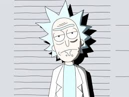

rick

Richard Daniel "Rick" Sánchez de la Dimensión C-137 es un viejo científico alcohólico que acostumbra hablar de manera vulgar y entre eructos aparte de hablar de forma bastante inapropiada constantemente, la mayoría de las veces tiene un rastro de saliva e incluso se cree que es licor en la boca. Es padre de Beth Smith y el abuelo materno de Summer y Morty.
Es un hombre que ha pasado gran parte de su vida viajando a través de diversas dimensiones dando a entender que Morty es muy poco inteligente al punto de ser casi un retrasado.
Rick era un científico que había estado experimentando con la tecnología de teletransporte, hasta que un día Rick, el cual ya tenía una pistola de portales interdimensional, le presentó la posibilidad de viajar por el multiverso. Cuando Rick dijo que no, el otro Rick se sintió insultado y asesinó a la familia de Rick C-137 con una bomba.
Rick pasaría las próximas décadas buscando al Rick que asesinó a su familia. Eventualmente se convirtió en traficante de armas, tratando de encontrar piezas para un dispositivo que le ayudara a rastrear al que mató a su familia. Rick finalmente conoció a Hombre Pájaro en un festival y formó una banda de rock llamada "The Flesh Curtains" junto con Squanchy. Los tres finalmente formaron el núcleo de la resistencia contra la Federación Galáctica, que culminó en la Batalla de Blood Ridge. Después de ganar la batalla, Rick le ofreció a Hombre Pájaro la oportunidad de unirse a él en sus aventuras por todo el multiverso, pero Hombre Pájaro se negó. Herido por esto, Rick se fue para continuar su búsqueda de venganza. Durante este tiempo, Rick asesinó a varios de sus yo alternativos, todos los cuales pertenecían a una organización desconocida de Ricks, pero ninguno de ellos era el Rick que estaba buscando. En este punto, Rick se había deprimido después de no poder encontrar al asesino de su familia y, a menudo, usaba alcohol para adormecer su constante angustia mental. Eventualmente, los otros Ricks se unieron para tratar de detener al llamado "Rick mas Rick". Sin embargo, incluso esto resultó ser inútil y Rick, una vez más, asesinó a la mayor parte de la alianza dispuesta a asesinarlo. Debido a su naturaleza imparable, los otros Ricks finalmente admitieron la derrota ante Rick C-137, reconociéndolo como su líder.